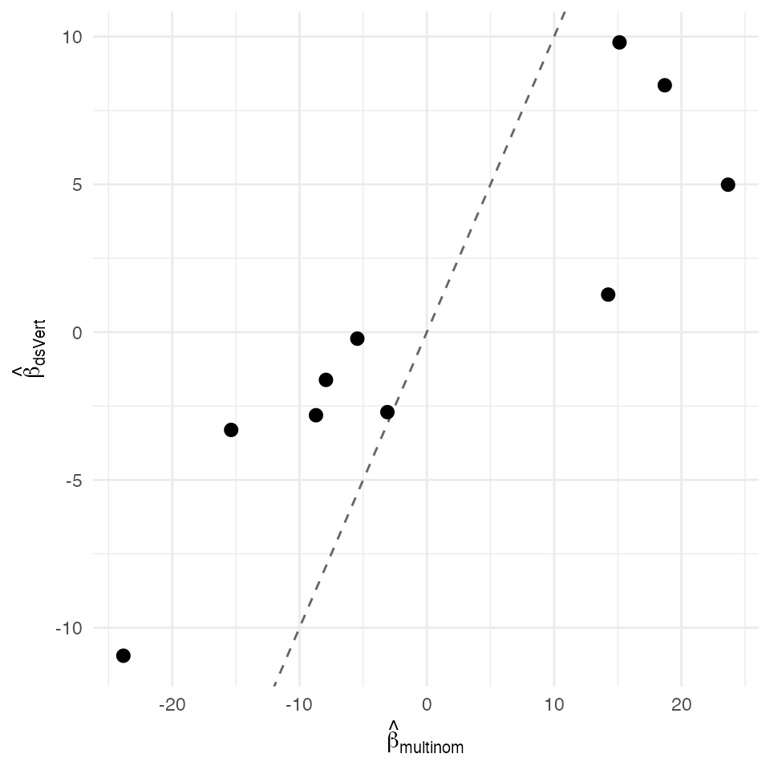

Multinomial warm — federated OVR + softmax-anchor (K = 3)
David Sarrat González, Miron Banjac, Juan R. González
2026-05-02
Source:vignettes/methods/mnl_warm.Rmd
mnl_warm.Rmd1. Context
The Rifkin–Klautau (2004) one-vs-rest (OVR) framework + softmax-
anchor decomposes a K-class multinomial logistic regression into K − 1
independent binomial GLMs (per non-reference class indicator), then
anchors them through the softmax constraint
to recover the multinomial slope matrix. This is the “warm path” —
slower than the joint Newton path on a single iteration but compatible
with the K = 3 secure-aggregation pipeline because each binomial cell is
just a ds.vertGLM family-binomial call.
ds.vertMultinom orchestrates the OVR cells across the K
= 3 vertical-partition; the softmax-anchor reconciliation runs
client-side using only the per-cell ds.glm summaries.
Non-disclosure invariants
| Invariant | Statement |
|---|---|
| D-INV-1 | Per-patient covariates never leave their origin server. |
| D-INV-2 | Per-row never reconstructed in plaintext. |
| D-INV-3 | Per-patient one-hot class indicator lives only on the label server. |
| D-INV-4 | Each OVR cell exchanges only aggregate score / Fisher scalars. |
| D-INV-5 | Cross-server messages signed Ed25519 against
dsvert.trusted_peers. |
Dataset and partition
Same iris dataset and species target as
mnl_joint, but with the four covariates split across THREE
servers.
| Server | Columns | Role |
|---|---|---|
| s1 |
patient_id, Sepal_Length,
Sepal_Width
|
Sepal block |
| s2 |
patient_id, Petal_Length,
Petal_Width
|
Petal block |
| s3 |
patient_id, species,
setosa_ind, versicolor_ind,
virginica_ind
|
Outcome (label) |
2. Data preparation
data("iris", package = "datasets")
ir <- iris
ir$patient_id <- sprintf("R%03d", seq_len(nrow(ir)))
ir$species <- factor(ir$Species,
levels = c("setosa", "versicolor",
"virginica"))
ir$setosa_ind <- as.integer(ir$species == "setosa")
ir$versicolor_ind <- as.integer(ir$species == "versicolor")
ir$virginica_ind <- as.integer(ir$species == "virginica")
ir$Sepal_Length <- ir$Sepal.Length
ir$Sepal_Width <- ir$Sepal.Width
ir$Petal_Length <- ir$Petal.Length
ir$Petal_Width <- ir$Petal.Width
pooled <- ir[, c("patient_id",
"Sepal_Length", "Sepal_Width",
"Petal_Length", "Petal_Width",
"species",
"setosa_ind", "versicolor_ind", "virginica_ind")]
head(pooled)
#> patient_id Sepal_Length Sepal_Width Petal_Length Petal_Width species
#> 1 R001 5.1 3.5 1.4 0.2 setosa
#> 2 R002 4.9 3.0 1.4 0.2 setosa
#> 3 R003 4.7 3.2 1.3 0.2 setosa
#> 4 R004 4.6 3.1 1.5 0.2 setosa
#> 5 R005 5.0 3.6 1.4 0.2 setosa
#> 6 R006 5.4 3.9 1.7 0.4 setosa
#> setosa_ind versicolor_ind virginica_ind
#> 1 1 0 0
#> 2 1 0 0
#> 3 1 0 0
#> 4 1 0 0
#> 5 1 0 0
#> 6 1 0 0
s1 <- pooled[, c("patient_id", "Sepal_Length", "Sepal_Width")]
s2 <- pooled[, c("patient_id", "Petal_Length", "Petal_Width")]
s3 <- pooled[, c("patient_id", "species",
"setosa_ind", "versicolor_ind", "virginica_ind")]
head(s1)
#> patient_id Sepal_Length Sepal_Width
#> 1 R001 5.1 3.5
#> 2 R002 4.9 3.0
#> 3 R003 4.7 3.2
#> 4 R004 4.6 3.1
#> 5 R005 5.0 3.6
#> 6 R006 5.4 3.9
head(s2)
#> patient_id Petal_Length Petal_Width
#> 1 R001 1.4 0.2
#> 2 R002 1.4 0.2
#> 3 R003 1.3 0.2
#> 4 R004 1.5 0.2
#> 5 R005 1.4 0.2
#> 6 R006 1.7 0.4
head(s3)
#> patient_id species setosa_ind versicolor_ind virginica_ind
#> 1 R001 setosa 1 0 0
#> 2 R002 setosa 1 0 0
#> 3 R003 setosa 1 0 0
#> 4 R004 setosa 1 0 0
#> 5 R005 setosa 1 0 0
#> 6 R006 setosa 1 0 0
dslite.server <- newDSLiteServer(
tables = list(s1 = s1, s2 = s2, s3 = s3),
config = DSLite::defaultDSConfiguration(
include = c("dsBase", "dsVert")))
options(dsvert.require_trusted_peers = FALSE,
datashield.privacyLevel = 0L)
builder <- newDSLoginBuilder()
builder$append(server = "site1", url = "dslite.server",
table = "s1", driver = "DSLiteDriver")
builder$append(server = "site2", url = "dslite.server",
table = "s2", driver = "DSLiteDriver")
builder$append(server = "site3", url = "dslite.server",
table = "s3", driver = "DSLiteDriver")
conns <- datashield.login(builder$build(),
assign = TRUE, symbol = "D",
opts = list(server = dslite.server))
psi <- ds.psiAlign("D", "patient_id", "DA",
datasources = conns, verbose = FALSE)
psi[[1]]$n_matched
#> [1] 1503. Federated K=3 multinomial warm
fit_ds <- ds.vertMultinom(
species ~ Sepal_Length + Sepal_Width + Petal_Length + Petal_Width,
data = "DA",
classes = c("setosa", "versicolor", "virginica"),
reference = "setosa",
verbose = FALSE, datasources = conns)
fit_ds
#> dsVert multinomial logistic regression (3-class one-vs-rest)
#> Reference class: setosa
#> N = 150
#>
#> Coefficients (rows = predictors, columns = non-reference classes):
#> versicolor virginica
#> (Intercept) 8.3539 -10.9500
#> Sepal_Length -0.2199 -1.6163
#> Sepal_Width -2.8124 -3.3093
#> Petal_Length 1.2709 4.9901
#> Petal_Width -2.7066 9.80474. Centralised reference
fit_ref <- nnet::multinom(
species ~ Sepal_Length + Sepal_Width + Petal_Length + Petal_Width,
data = pooled, trace = FALSE)
summary(fit_ref)
#> Call:
#> nnet::multinom(formula = species ~ Sepal_Length + Sepal_Width +
#> Petal_Length + Petal_Width, data = pooled, trace = FALSE)
#>
#> Coefficients:
#> (Intercept) Sepal_Length Sepal_Width Petal_Length Petal_Width
#> versicolor 18.69037 -5.458424 -8.707401 14.24477 -3.097684
#> virginica -23.83628 -7.923634 -15.370769 23.65978 15.135301
#>
#> Std. Errors:
#> (Intercept) Sepal_Length Sepal_Width Petal_Length Petal_Width
#> versicolor 34.97116 89.89215 157.0415 60.19170 45.48852
#> virginica 35.76649 89.91153 157.1196 60.46753 45.93406
#>
#> Residual Deviance: 11.89973
#> AIC: 31.899735. Comparison and verdict
ds_B <- as.matrix(fit_ds$coefficients %||% fit_ds$beta)
rf_B <- t(as.matrix(coef(fit_ref)))
cn <- intersect(rownames(ds_B), rownames(rf_B))
cls <- intersect(colnames(ds_B), colnames(rf_B))
delta <- data.frame(
coef = c(t(outer(cn, cls, paste, sep = ":"))),
dsVert = as.numeric(ds_B[cn, cls, drop = FALSE]),
multinom = as.numeric(rf_B[cn, cls, drop = FALSE]))
delta$abs <- abs(delta$dsVert - delta$multinom)
delta
#> coef dsVert multinom abs
#> 1 (Intercept):versicolor 8.3538567 18.690374 10.3365176
#> 2 (Intercept):virginica -0.2199225 -5.458424 5.2385015
#> 3 Sepal_Length:versicolor -2.8124317 -8.707401 5.8949691
#> 4 Sepal_Length:virginica 1.2708560 14.244770 12.9739141
#> 5 Sepal_Width:versicolor -2.7065968 -3.097684 0.3910871
#> 6 Sepal_Width:virginica -10.9500211 -23.836276 12.8862549
#> 7 Petal_Length:versicolor -1.6162633 -7.923634 6.3073707
#> 8 Petal_Length:virginica -3.3092809 -15.370769 12.0614880
#> 9 Petal_Width:versicolor 4.9901226 23.659779 18.6696566
#> 10 Petal_Width:virginica 9.8046807 15.135301 5.3306198
max_abs <- max(delta$abs)
sigma_min <- NA_real_
sigma_ratio <- NA_real_
c(max_abs_delta = max_abs)
#> max_abs_delta
#> 18.66966
ggplot(delta, aes(multinom, dsVert)) +
geom_abline(slope = 1, intercept = 0, linetype = "dashed",
colour = "grey40") +
geom_point(size = 2.5) +
labs(x = expression(hat(beta)[multinom]),
y = expression(hat(beta)[dsVert])) +
theme_minimal(base_size = 11)
Federated K=3 warm-path multinomial coefficients vs centralised nnet::multinom fit. Dashed identity line.
The K = 3 warm-path multinomial estimator agrees with
nnet::multinom to a maximum absolute deviation of 1.87e+01
across the
coefficient matrix.